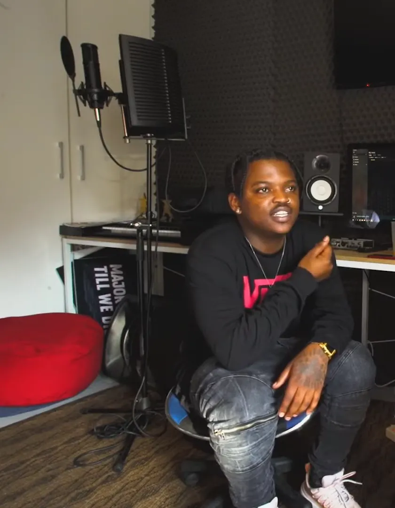
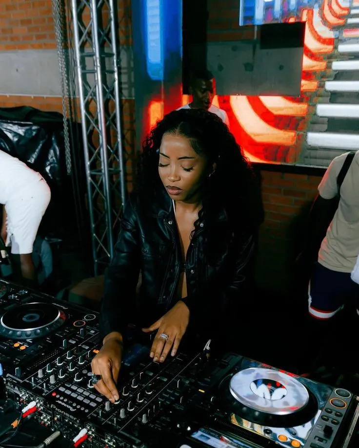
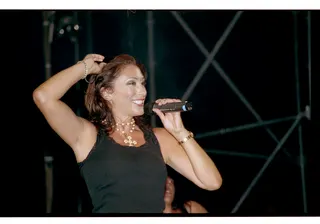

Amapiano
What is amapiano? South African house music, the songs and the artists
Pianos, a rolling log drum and a tempo set so nobody has to sweat: the township sound that went from WhatsApp groups and minibus taxis to the Billboard Hot 100.
The pianos.
Amapiano did not arrive through radio or clubs. Red Bull's history of the genre says it spread through WhatsApp and through minibus taxis, the shared vans that carry commuters across South Africa, long before stations would play it. Producers gave their tracks away. By 2019 it was the country's mainstream sound, and within a few years it had reached London, Nigeria, the Billboard Hot 100 and K-pop.
The sound is slower and softer than most dance music. Amapiano music usually sits around 110 BPM, and Mixmag quotes a South African saying about it: the aim is not to sweat. Tracks open with long intros and hold back their biggest element, the log drum, until well into the song.
What amapiano sounds like.
Amapiano is a hybrid of kwaito, deep house, gqom, jazz, soul and lounge music, built from synths and wide, percussive basslines. Over that sit the pianos the genre is named after: chords and melodies with their roots in jazz and lounge.
The log drum is the part everyone recognises. It is a deep, percussive bass hit that carries the bassline. Its spread is credited to MDU aka TRP: Kabza De Small, one of the genre's biggest producers, has named him as its source. Some accounts trace it further back, to the kwaito pioneer M'du Masilela.
Songs are long and patient. Mixmag notes intros of 64 bars and DJs who let records breathe, with the log drum saved as the hook: in Njelic and Thabza Tee's "Down The Drain", around 112 BPM, it lands after two minutes.
Vocals are sung or chanted in South Africa's own languages. Red Bull lists Zulu, Xhosa, Sotho, Setswana and Xitsonga, and across the genre amapiano is sung in eleven of the country's twelve official languages.
What amapiano means.
The amapiano meaning is simple: "ama" is the isiZulu plural prefix, so amapiano translates as "the pianos". The Evening Standard reports that early tracks were known simply as "numbas", and that the duo MFR Souls are said to have given the genre its name.
Where amapiano came from.
Nobody agrees on exactly where it started. Red Bull and other histories place its emergence in Gauteng in the mid-2010s and note that the birthplace is disputed between Johannesburg's townships and Pretoria. The Pretoria claim rests on the genre's likeness to bacardi house, a local Pretoria sound. No single founder is credited.
The Evening Standard dates the first experiments to around 2010, made by young producers on the FruityLoops software. The scene took shape in Pretoria, Soweto, Alexandra, Katlehong and Vosloorus.
Kwaito, the parent sound
Amapiano's closest ancestor is kwaito. It came out of Soweto in the late 1980s and 1990s: slower, syncopated house sung in South African languages, and Mixmag calls it a post-apartheid form. Early kwaito ran at about 100 BPM. Kwaito tapes were sold at taxi ranks, which is one reason taxis matter to amapiano's story too.
Mixmag names Kwiish SA's "Iskhathi (Gong Gong)" as one of the records behind the sound that later reached Europe.
How amapiano spread.
Red Bull describes a genre that grew outside the industry. Radio stations resisted it until the major labels, Universal and Sony, signed its artists in the late 2010s. Before that it travelled in WhatsApp groups and through taxi sound systems, and producers released music for free. By 2019 it was South Africa's mainstream sound and was spreading across Africa. The South Africa Amapiano Music Awards began in 2021, and Beatport, the dance music store, added amapiano as a genre in 2022.
MFR Souls, the duo of Tumelo Nedondwe and Tumelo Mabe from Katlehong, are counted among the pioneers alongside Kabza De Small and JazziDisciples. Their "Love You Tonight", with DJ Maphorisa, Sha Sha and Kabza, went Platinum.
The pandemic sent it further. Red Bull says amapiano dance videos took off on TikTok during lockdown, and the Evening Standard reports that amapiano views on TikTok doubled in 2023, with the hashtag passing 14 billion views.
Nigeria picked it up quickly. "Champion Sound", by Davido and the Pretoria rapper Focalistic, was big enough that, Red Bull notes, some listeners abroad assumed amapiano came from Nigeria. The Evening Standard lists Davido, Wizkid, Asake, Rema and Burna Boy among the Nigerian stars who have used it.

Amapiano in London and abroad.
The UK became amapiano's second home. The Evening Standard reports that the UK is second only to South Africa in listening to Spotify's Amapiano Grooves playlist, which has more than 600,000 likes. In London, the Piano People parties moved up to Printworks in 2022, then to Drumsheds.
Mixmag describes a tempo argument that came with the move. Amapiano sits around 110 BPM at home, and DJs abroad, especially in the UK, have pushed it towards 120, against the habit of letting a slow track roll.
Mixmag says that for many Europeans the first amapiano record was "Getting Late" by Kooldrink and Tyla, released in 2019 with a video in 2021. It opened the door for South African artists to tour.
Tyla and "Water"
Tyla's "Water" took the genre further than anything before it. Released in July 2023 as the lead single of her debut album, Tyla, it went viral in October through a bacardi dance challenge. It made her the first South African solo artist on the Billboard Hot 100 in 55 years, with top 10 placings in the UK, Ireland, Australia, the Netherlands and Sweden, and number one in New Zealand. The Evening Standard counts 113 million views for the Water Challenge. Travis Scott and Marshmello remixes followed in November 2023.
Tyla has been called the "Queen of Popiano", the pop strand of amapiano. Her earlier "Overdue", with Kooldrink and DJ Lag, is an example of that style.
Amapiano has since turned up in K-pop, in Le Sserafim's "Smart", and in other countries' own versions, which the table below lists.
The amapiano dance.
Amapiano dance is understated. Mixmag describes subtle moves and a lot of facial expression rather than full-body exertion, and notes that the music is listened to at home, in cars and on the street as much as in clubs. The dances spread online: Red Bull points to TikTok in lockdown, and Mixmag names the dancer TOSS as one of the viral figures.
Kamo Mphela became famous through a dance video and went on to sing and perform as one of the genre's best-known dancers. "Water" itself spread through a dance challenge.
Amapiano styles.
Amapiano has already split into named strands. These are the main ones:
| Style | Where | What marks it | A record or name to know |
|---|---|---|---|
| Private school piano | South Africa | Soulful: shakers, mellow log drums, progressive chords, live guitar, sax, violin and trumpet | Kelvin Momo |
| Quantum sound | South Africa | Re-edits rooted in the taxi kick of gqom | RealShaunMusiq, Sizwe Nineteen, Nandipha808 |
| New age bacardi | Pretoria, about 2021 | Amapiano merged with Pretoria's bacardi house | Mellow & Sleazy, "Trust Fund" |
| Popiano | South Africa | Pop songwriting over amapiano | Kooldrink, DJ Lag and Tyla, "Overdue" |
| Bique | Mozambique | Amapiano made in Mozambique | FOI and Jay Music, "Bique (Deep Groove)" |
| Afropiano | Nigeria | Afrobeats artists on amapiano rhythms | Clemzy, L.A.X. |
| Bongopiano | Tanzania | Bongo flava stars on amapiano | Diamond Platnumz, Marioo, Harmonize |
| Ojapiano | Nigeria | Named after Kcee's record | Kcee |
The best amapiano songs.
These are the records the sources keep returning to, with a player wherever an official upload exists. "Umshove" by Kabza De Small (2018), which brought him international recognition, and Mellow & Sleazy's "Trust Fund" (2021) are named without a player: no upload credited to them was found.
Vigro Deep, one of amapiano's pioneering DJs, is known for "Soundcheck", which the Evening Standard picks out. Mixmag says his style brings in EDM-like melodies.
DBN Gogo, born in Durban and raised in Pretoria, had a Platinum record with "Khuza Gogo".
Uncle Waffles' debut single "Tanzania" went to number one in South Africa and is seven times Platinum.
Young Stunna works with Kabza De Small and DJ Maphorisa. "Adiwele" and "Bopha" are his best-known songs.
Kelvin Momo is the producer credited with private school piano, the soulful, live-instrument strand. "Funa" features TBO and JaySax.
Amapiano artists.
The Evening Standard's list of pioneers is a good start: Kabza De Small, DJ Maphorisa, the late Papers 707, Sha Sha, Mr JazziQ, DJ Stokie, DJ Jaivane and Junior Taurus. Its second list adds Kamo Mphela, Major League DJz, DBN Gogo and Musa Keys.
Kabza De Small (Kabelo Petrus Motha) is one of the genre's major figures. With DJ Maphorisa he is the Scorpion Kings, and Red Bull says he has won ten South African Music Awards. In June 2024 he played Red Bull Symphonic with an orchestra at Gold Reef City in Johannesburg. The Evening Standard reports that Kabza and Maphorisa were the most-streamed South African artists of 2023.
DJ Maphorisa (Themba Sekowe) runs the label BlaqBoy Music and was formerly signed to Kalawa Jazmee. Mr JazziQ (Tumelo Manyoni) came out of JazziDisciples.
Sha Sha (Charmaine Mapimbiro), from Mutare in Zimbabwe, is called the "Queen of amapiano" and is known for her work with Maphorisa and Kabza.
Focalistic (Lethabo Sebetso) is a Pretoria rapper whose "Ke Star" reached number 16 on Billboard's Top Triller Global chart. His album Sgubhu Ses Excellent came out in 2020.
Uncle Waffles (Lungelihle Zwane) is a Swazi DJ based in South Africa, called the "Princess of Amapiano" by Billboard.

Mixmag adds a second wave of producers, among them Thabza Tee, Sizwe Nineteen and Jay Music, and the names given for the quantum sound are RealShaunMusiq, Sizwe Nineteen and Nandipha808. Mixmag also points to the gap between township producers and the stars who tour.
Amapiano or house music.
Amapiano is South African house music, but it reached house by its own route. Deep house is one of its ingredients, alongside kwaito, gqom, jazz, soul and lounge, and Mixmag describes kwaito itself as slower, syncopated house sung in South African languages. The result runs slower than most house, around 110 BPM, with the log drum carrying the bass and pianos on top. For the wider family, see the house music guide.
Where to start with amapiano.
Start with "Getting Late" and "Water" to hear where the pop side went, then "Love You Tonight" and "Khuza Gogo" for the sound at home. For a DJ, the Scorpion Kings at Boiler Room in Johannesburg show its best-known duo, and Kelvin Momo's set shows the softer, private school side.
Amapiano FAQ.
What is amapiano?
Amapiano is a style of South African house music from the townships of Gauteng, which emerged in the mid-2010s. It mixes kwaito, deep house, jazz and lounge, and is known for piano melodies and a deep, bouncing bass called the log drum.
What does amapiano mean?
It is isiZulu for "the pianos". Early tracks were called "numbas", and MFR Souls are said to have given the genre its name.
Where did amapiano come from?
Gauteng province in South Africa, in the mid-2010s. The exact birthplace is disputed between Johannesburg's townships and Pretoria, and no single founder is credited.
What is a log drum in amapiano?
The log drum is amapiano's signature sound: a deep, percussive bass hit that carries the bassline. Its spread is credited to MDU aka TRP, and some accounts trace it back to the kwaito pioneer M'du Masilela.
What is the difference between amapiano and house music?
Amapiano is a South African branch of house, but slower, at around 110 BPM, and built around the log drum and jazzy piano chords. It came to house through kwaito, South Africa's 1990s township sound.
Who are the biggest amapiano artists?
Kabza De Small and DJ Maphorisa, who perform as the Scorpion Kings, were the most-streamed South African artists of 2023. Tyla, DBN Gogo, Uncle Waffles, Focalistic, Kelvin Momo, Sha Sha and MFR Souls are among the best known.
What is the most popular amapiano song?
Tyla's "Water" (2023) is the biggest internationally: it made her the first South African solo artist on the Billboard Hot 100 in 55 years. At home, Uncle Waffles' "Tanzania" is seven times Platinum.
What is the amapiano dance?
There is no single amapiano dance. The dancing is subtle and expressive rather than energetic, and new moves spread through TikTok challenges, like the one that made "Water" go viral.
Sources.
- Wikipedia: Amapiano
- Red Bull: Amapiano history, South Africa's unique music genre, Themba Kriger, 2024
- Evening Standard (via Yahoo): Amapiano, our guide to the music sensation sweeping the world, El Hunt, 2024
- Mixmag: Amapiano's second wave, how kwaito opened the door for amapiano's evolutions, Jake Colvin, 2024
Continue reading
Read next.
 Music history~14 min read
Music history~14 min readWhat Is House Music? History, Sound and Chicago Origins
Frankie Knuckles, the Warehouse and the first Chicago records: what house music is, why it is called house, and the styles from deep house to afro house.
Read article → Music history~14 min read
Music history~14 min readWhat Is Acid House? From Chicago's TB-303 to the UK Rave Boom
A $40 bass machine, three friends in Chicago, a DJ who played their tape four times in a night, and the British movement that borrowed the name.
Read article →
Music history~9 min readWhat Is Italo Disco? Italian Disco Music, Songs and Artists
Drum machines, synthesizers and English sung by Italians: the Italo disco sound, how ZYX named it, the biggest hits and the link to house.
Read article → Music history~16 min read
Music history~16 min readWhat Is UK Garage? The Sound, 2-Step, Speed Garage and Bassline
London played an American record too fast until the beat broke. The branches it split into, and the numbers behind its revival.
Read article →Want something to play while you read? Let the Selector pick a DJ set.